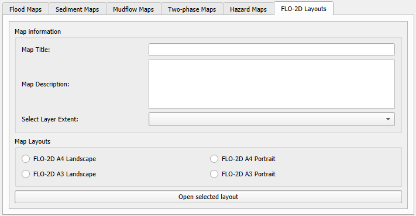

Layouts
FLO-2D MapCrafter can automate the creation of QGIS maps by using a predefined map layout. This feature is called FLO-2D Layouts.
Map Information
Map Title
Write the title of your map. Example: “FLO-2D Flood mudflow extent area”
Map Description
Write a description of your map. Example:
“The Mudflow Extent Map provides a detailed visualization of areas susceptible to mudflow events based on FLO-2D simulations. This map highlights the extent of potential mudflow occurrences, offering valuable insights for risk assessment and mitigation strategies.”
Select Layer Extent
Select the extent of the layer that will be used for mapping. It is recommended to select the Computational Domain, but any layer can be selected.
Map Layouts
FLO-2D A4 & A3 Landscape
Example of the FLO-2D A4 & A3 Landscape layout. The legend should be added by the user, and small adjustments on the scale or other objects should be performed by the user.

FLO-2D A4 & A3 Portrait
Example of the FLO-2D A4 & A3 Portrait layout. The legend should be added by the user, and small adjustments on the scale or other objects should be performed by the user.